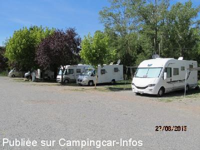
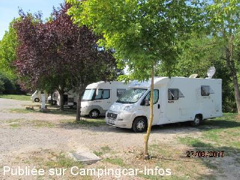
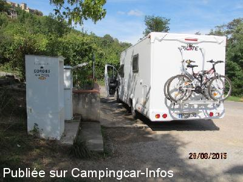
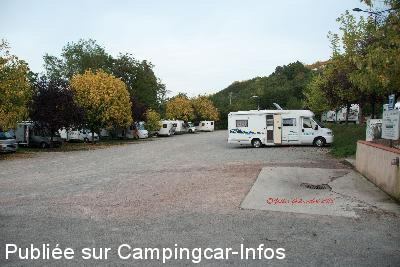
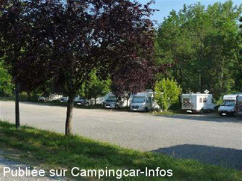
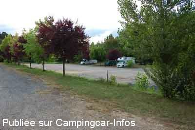

ASN = Aire de services avec stationnement nuit possible de :
CORDES SUR CIEL
(N° 650)
Accès/adresse :
L'Hôpital
Parking Les Tuileries
81170 CORDES SUR CIEL
Parking Les Tuileries
81170 CORDES SUR CIEL
Latitude : (Nord) 44.06453° Décimaux ou 44° 3′ 52′′
Longitude : (Est) 1.95802° Décimaux ou 1° 57′ 28′′
Tarif : 2014
Stationnement : 5 €
Eau ou 3 h d'électricité : 2 €
Paiement par pièces ou à l'agent
Type de borne : SANISTATION
Services :


Restauration Supérette
Autres informations :
Ouvert toute l'année
20 emplacements sur herbe et graviers
Un jeton vous est remis par le garde champêtre, lorsque vous payez votre stationnement.

Le 13/09/2015 par jose 07

Le 13/09/2015 par jose 07

Le 13/09/2015 par jose 07

Le 04/11/2013 par Volker Grünenthal

Le 13/08/2013 par Sergio83

Le 12/01/2013 par Obelix
de
andre
le 04/04/2016 :
Très belle aire merci à la mairie . très beau village
A VOIR ABSOLUMENT !!!
Très belle aire merci à la mairie . très beau village
A VOIR ABSOLUMENT !!!
de
Céline
le 20/08/2015 :
Passage en août 2015. Parking spacieux, praticable par temps de pluie. Tout proche du centre ville, il faut grimper un peu mais pas longtemps avant d'atteindre le super village. Services faciles d'accès et pratiques, 1 jeton compris dans le prix du stationnement. Conseil restau : "Les terrasses sur ciel".
Merci à la commune.
Passage en août 2015. Parking spacieux, praticable par temps de pluie. Tout proche du centre ville, il faut grimper un peu mais pas longtemps avant d'atteindre le super village. Services faciles d'accès et pratiques, 1 jeton compris dans le prix du stationnement. Conseil restau : "Les terrasses sur ciel".
Merci à la commune.
de
Plaimpied
le 13/08/2015 :
Nous avons visités ce village qui mériterait d'être classé plus beaux village de France. Monté en petit train pour 3€ et vous pouvez redescendre gratuitement avec votre billet où choisir de descendre à pied comme nous l'avons fait.
Nous avons visités ce village qui mériterait d'être classé plus beaux village de France. Monté en petit train pour 3€ et vous pouvez redescendre gratuitement avec votre billet où choisir de descendre à pied comme nous l'avons fait.
de
hidena86
le 05/04/2015 :
Mars 2015
Pas d'eau , mais vidange possible
pas d'électricité à cette saison
parking gratuit à cette saison
bien placé pour les commerces et les visites
calme
Mars 2015
Pas d'eau , mais vidange possible
pas d'électricité à cette saison
parking gratuit à cette saison
bien placé pour les commerces et les visites
calme
de
Xtian74
le 14/11/2014 :
Passage le 10/11/2014. Le paiement du stationnement ne se fait plus à la borne horodatrice (Hors Service ?) mais à la police municipale qui, selon le papier affiché sur la borne, passe en soirée. Toutefois, nous n'avons vu personne et avec les 7 autres C-C présents, nous n'avons donc rien payé et avons passé une nuit bien calme...
Passage le 10/11/2014. Le paiement du stationnement ne se fait plus à la borne horodatrice (Hors Service ?) mais à la police municipale qui, selon le papier affiché sur la borne, passe en soirée. Toutefois, nous n'avons vu personne et avec les 7 autres C-C présents, nous n'avons donc rien payé et avons passé une nuit bien calme...
de
goffre
le 28/07/2014 :
Très bien pour visiter le village
Pour 5 euros c'est raisonnable avec l jeton pour l'électricité ou l'eau
Attention parking très en pente sur les cailloux
Très bien pour visiter le village
Pour 5 euros c'est raisonnable avec l jeton pour l'électricité ou l'eau
Attention parking très en pente sur les cailloux
de
Frédo40
le 16/07/2014 :
§ De passage le 12.07, aire sympa et calme dans la verte, 44 CC de présents, aire pleine mais 22 autres CC sur le parking voiture autorisé pour l'occasion.(Fête médiévale)
Tarif 5 € à la borne avec de la monnaie uniquement, la borne vous délivre un ticket de stationnement de 24h et un jeton pour 3 h d'élec ou 100 litres d'eau.
Une seconde borne(à 3 mètre de la première) permet pour 1 €(une pièce) d'avoir 100 litres d'eau....ne pas se tromper(comme je l'ai fait) entre la mangeoire à jetons et la mangeoire a pièce, c'est pas le même robinet non plus.
Le "coeur du village médiéval" est à voir et pas de chance ce weekend avec la "Fête médiévale" il en à couté 9 € par personne tout de même....mais, à priori c'est gratuit le reste de l'année!!!
§ De passage le 12.07, aire sympa et calme dans la verte, 44 CC de présents, aire pleine mais 22 autres CC sur le parking voiture autorisé pour l'occasion.(Fête médiévale)
Tarif 5 € à la borne avec de la monnaie uniquement, la borne vous délivre un ticket de stationnement de 24h et un jeton pour 3 h d'élec ou 100 litres d'eau.
Une seconde borne(à 3 mètre de la première) permet pour 1 €(une pièce) d'avoir 100 litres d'eau....ne pas se tromper(comme je l'ai fait) entre la mangeoire à jetons et la mangeoire a pièce, c'est pas le même robinet non plus.
Le "coeur du village médiéval" est à voir et pas de chance ce weekend avec la "Fête médiévale" il en à couté 9 € par personne tout de même....mais, à priori c'est gratuit le reste de l'année!!!
de
shoggoun
le 12/05/2013 :
parking bien calme.on a passée une bonne nuit, (surtout apres la montée au village)
il faut avoir 5 euros en monnaie car la borne ne prends que des pieces. (il est peut etre possible de payer au garde champetre qui passe le soir pour verifier les tickets)
parking bien calme.on a passée une bonne nuit, (surtout apres la montée au village)
il faut avoir 5 euros en monnaie car la borne ne prends que des pieces. (il est peut etre possible de payer au garde champetre qui passe le soir pour verifier les tickets)
de
Josep Jucglà
le 02/04/2013 :
Bonne situation, calme, avec éclairage et d'eau de service (100 litres), la lumière (3 heures). La marche à l'entrée de la ville est court, bien montée. Il suffit de faire attention à ce que vous avez à payer 5 euros en pièces de monnaie et parfois vous n'avez pas. Une des meilleures escales dans la zone.
Bonne situation, calme, avec éclairage et d'eau de service (100 litres), la lumière (3 heures). La marche à l'entrée de la ville est court, bien montée. Il suffit de faire attention à ce que vous avez à payer 5 euros en pièces de monnaie et parfois vous n'avez pas. Une des meilleures escales dans la zone.
de
boubou45
le 12/08/2012 :
De passage en aout, nous , nous l'avons trouvée pas mal cette aire, au calme, parking pratique et pas trop loin du village pour une belle promenade.
De passage en aout, nous , nous l'avons trouvée pas mal cette aire, au calme, parking pratique et pas trop loin du village pour une belle promenade.
de
michel 28
le 13/01/2012 :
Aire très pratique située tous près de cette merveilleuse ville.Bon accueil à la maison du tourisme. Attention cette aire est hors services en hiver.
Aire très pratique située tous près de cette merveilleuse ville.Bon accueil à la maison du tourisme. Attention cette aire est hors services en hiver.
de
SENECH
le 10/10/2011 :
Pas extraordinaire cette aire ou plutôt ce parking réservé aux cars et camping car. Quelques places pour les cc à l'ombre avec une vue imprenable ....sur les cars qui attendent l'heure pour aller chercher leurs clients qui visitent CORDES. Bornes trés modernes qui fonctionnent avec un jeton, pour l'eau et l'électricité. Un jeton vous est remis par le garde champêtre, lorsque vous payez votre stationnement.
Lieu pratique si vous voulez visiter Cordes.
Pas extraordinaire cette aire ou plutôt ce parking réservé aux cars et camping car. Quelques places pour les cc à l'ombre avec une vue imprenable ....sur les cars qui attendent l'heure pour aller chercher leurs clients qui visitent CORDES. Bornes trés modernes qui fonctionnent avec un jeton, pour l'eau et l'électricité. Un jeton vous est remis par le garde champêtre, lorsque vous payez votre stationnement.
Lieu pratique si vous voulez visiter Cordes.
de
jpcalvados
le 18/04/2010 :
Le stationnement est de 5€ avec les services, paiement par le policier municipal qui passe 2 fois par jour. Bientôt le branchement électrique nous a affirmé ce dernier.
Très beau village à ne pas manquer.
Le stationnement est de 5€ avec les services, paiement par le policier municipal qui passe 2 fois par jour. Bientôt le branchement électrique nous a affirmé ce dernier.
Très beau village à ne pas manquer.